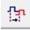

10.4 Adjusting Clock Information
(Ask a Question)- Global jitter (or internal system jitter)
- PLL/DLL jitter
- External jitter
For more information about these types of jitter, see the appropriate product datasheets and documents.
Starting with Libero SoC v2022.1, the automatic computation of system clock jitter for
Place & Route and Static Timing Analysis was introduced to the design flow for
PolarFire and PolarFire SoC devices. With this feature, you need only specify the clock
jitter of any FPGA primary input using the set_input_jitter constraint.
These jitter components are analyzed automatically, and a specific jitter value computed
for each clock is passed on to the appropriate design flow steps. With the automatic
clock jitter flow, you can add a margin to the estimated jitter of a clock using the
set_clock_uncertainty constraint.
set_system_jitter constraint to override the automatically computed
global jitter value. System jitter is estimated based on the count of registers and RAM
blocks in the synthesized netlist. A report similar to the following, detailing the
jitter estimate, is generated upon completing the Place & Route and Verify Timing
steps. You can also provide the latency of a clock from its source outside the device to the
primary input using the set_clock_latency constraint.
For more information about clock jitters, see the PolarFire Family Clocking Resources User Guide .
10.4.1 Set a Clock Input Jitter Value
(Ask a Question)Use the set_input_jitter constraint to specify the peak-to-peak jitter
value at the primary input of the clock (see section 19.8.1.61 set_input_jitter).
10.4.2 Set a Clock Uncertainty Constraint
(Ask a Question)Use the Set Clock Uncertainty Constraint dialog box to set either the Simple Clock Uncertainty constraint or the Clock To Clock Uncertainty constraint from the Type drop-down menu. The default is Simple Clock Uncertainty.
10.4.2.1 Set Simple Clock Uncertainty Constraint
(Ask a Question)To open the Set Clock Uncertainty Constraint dialog box from the Constraints menu, choose Clock Uncertainty and select Simple Clock Uncertainty from the Type drop-down menu in Set Clock Uncertainty Constraint dialog box.
The following table describes the Set Clock Uncertainty Constraint dialog box options.
| Option | Description |
|---|---|
| Type |
Select Simple Clock Uncertainty (default) to set clock uncertainty constraint on a single clock. |
| Source |
Specifies the clock name as the uncertainty source. To set the source clock, click the Browse button to open the Select Source for Simple Uncertainty Constraint dialog box. The following options are available in the Select Source
for Simple Uncertainty Constraint dialog box:
|
| Uncertainity | Enter the time in ns that represents the amount of
deviation between two clock edges. |
| Use uncertainty for | Enables you to select whether the uncertainty constraint applies to setup, hold, or all checks. |
| Comment | Enables you to save a single line of text that describes this constraint. |
10.4.2.2 Set Clock-to-Clock Uncertainty Constraint
(Ask a Question)To open the Set Clock-to-clock Uncertainty Constraint dialog box from the Constraints menu, choose Clock Uncertainty, and select Clock To Clock Uncertainty from the Type drop-down menu.
The following table describes the Set Clock-to-clock Uncertainty Constraint dialog box options.
| Option | Description |
|---|---|
| Type | Select Clock To Clock Uncertainty. |
| From Clock | Specifies clock name as the uncertainty source. To set the From Clock, click the Browse button to open the Select Source Clock List for Clock-to-clock Uncertainty dialog box. The following options
are available in the Select Source Clock List for
Clock-to-clock Uncertainty dialog box:
|
| Edge | Enables you to select if the clock-to-clock uncertainty applies to rising, falling, or both edges. |
| To Clock | Specifies clock name as the uncertainty destination. To set the To Clock, click the Browse button to open the Select Destination Clock List for Clock-to-clock Uncertainty Constraint dialog box. The
following options are available in the Select Destination
Clock List for Clock-to-clock Uncertainty Constraint
dialog box:
|
| Uncertainty | Enter the time in ns that represents the amount of
deviation between two clock edges. |
| Use Uncertainty For | Enables you to select whether the uncertainty constraint applies to setup, hold, or all checks. |
| Comment | Enables you to save a single line of text that describes this constraint. |
10.4.3 Set Clock Source Latency Constraint
(Ask a Question)Use the clock source latency constraint to specify the delay from the clock generation point to the clock definition point in the design.
Clock source latency defines the delay between an external clock source and the definition pin of a clock.
You can specify both an "early" delay and a "late" delay for this latency, providing an uncertainty that the timing analyzer can use for propagating through its calculations. Rising and falling edges of the same clock can have different latencies. If only one clock source latency value is provided, the value is taken as the exact latency value for both rising and falling edges.
To specify a Clock Source Latency constraint, open the Set Clock Source Latency Constraint dialog box in one of the following four ways:
- In the Constraints Browser, double-click Clock Source Latency.
- Click the Clock Source Latency Constraint  icon.
- From the Constraints menu, click Clock Source Latency .
- Right-click any row of Clock Latency Constraints Table and click Add Clock Source Latency. The Set Clock Source Latency Constraint dialog box appears.
The following table describes the Set Clock Source Latency Constraint dialog box options.
| Option | Description |
|---|---|
| Clock Name or Source | To select the clock source, click the Browse
button to open the Choose the Clock Source Pin
dialog box. The only choice available for Pin Type is Clock Pins. |
| Late Rise | Specifies the largest possible latency (in nanoseconds) of the rising clock edge at the clock port or pin selected with respect to its source. Negative values are acceptable, but may lead to overly optimistic analysis. |
| Late Fall | Specifies the largest possible latency (in nanoseconds) of the falling clock edge at the clock port or pin selected with respect to its source. Negative values are acceptable, but may lead to overly optimistic analysis. |
| Early Rise | Specifies the smallest possible latency (in nanoseconds) of the rising clock edge at the clock port or pin selected with respect to its source. Negative values are acceptable, but may lead to overly optimistic analysis. |
| Early Fall | Specifies the smallest possible latency (in nanoseconds) of the falling clock edge at the clock port or pin selected with respect to its source. Negative values are acceptable, but may lead to overly optimistic analysis. |
| Falling same as rising | Specifies that the rising and falling clock edges have the same latency. |
| Early same as Late |
Specifies that the clock source latency must be considered a single value, not a range from early to late. |
| Comment | Enter a one-line comment to describe the clock source latency. |
10.4.4 Set a Clock Group
(Ask a Question)To add or delete a clock group constraint, open the Add Clock Groups Constraint dialog box in one of the following ways:
- From the Constraints menu, click Clock Groups.
- In the Constraints Browser, double-click Clock Groups.
- Right-click any row of Clock Groups Constraints Table and click Add Clock Groups.
The following table describes the Add Clock Groups Constraints dialog box options.
| Option | Description |
|---|---|
| ClockGroupsName | Enter a name for the clock groups to be added. |
| Exclusive Flag | Choose one of the following three clock group attributes for the
clock group:
|
| Add Group | Click Add to open a dialog box to add clocks to a clock group. In the Available Pins list, click the clocks, and then click Add to move them to the Assigned Pins list. Click OK. |
| Delete Group | Delete the clocks from a clock group. Select the group of clocks to be deleted and click Delete Group. This will delete the clock group. |
10.4.5 Modifying a System Jitter Value
(Ask a Question)Use the set_system_jitter constraint to adjust the global jitter that is
automatically generated by Libero.